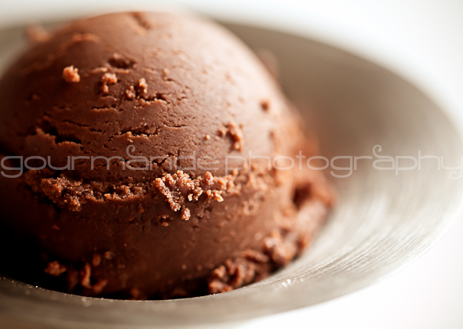

Welcome to Alotto Gelato!
We are proud to be an award-winning family-owned gelateria, open for 89 years! All of our gelato is created in small-batches using locally-sourced organic milk from the Alittle Dairy Farm. Our flavors are created from the purest ingredients, with only natural colorings and sweeteners - just like Momma used to make!
Our Gelato
Our Team